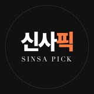
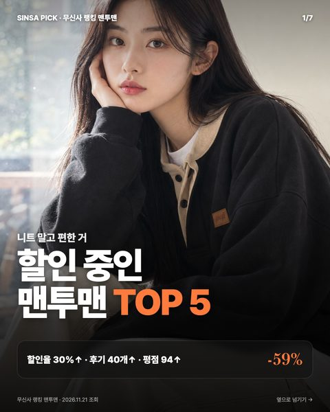
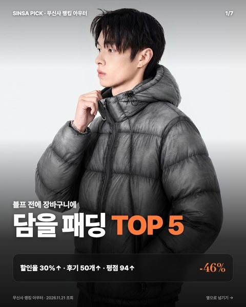

CHANNELS · 인스타 운영
신사픽 @sinsa_pick
2026.11.21 운영 시작
'무신사에서 뭘 사야 할지 모르겠다'는 고민을 숫자 기준으로 대신 골라 주는 계정입니다. 할인율·후기 수·평점 기준을 먼저 정하고 랭킹 데이터에서 통과한 상품만 TOP 5로 묶어, 매일 밤 9시에 올립니다.
- 장르무신사 랭킹 할인템 큐레이션 카드뉴스
- 게시매일 밤 9시
- 결과물10일치 카드뉴스 70장 · DM 정리본 PDF 10개 · 자동 DM 흐름
피드

@sinsa_pick신사픽
신사픽 | 무신사 대신 골라드림할인율·랭킹·후기로 고른 추천템만매일 밤 9시





실제로 만든 작품으로 꾸민 프로필 화면입니다(좋아요·팔로워 숫자는 넣지 않았어요).
이렇게 처리합니다
무엇을 고를지 — '할인율 30%↑ · 후기 40개↑ · 평점 96↑'처럼 기준을 먼저 숫자로 정하고, 무신사 랭킹·후기 데이터에서 통과한 상품만 추립니다. 디자인이 아쉬운 상품은 교체 기준을 추가해 바꿨습니다.
팔로우와 댓글이 오게 — 카드에는 '1번 후드티'처럼 번호와 종류만 보여 주고, 제품명·링크는 팔로우 + 댓글을 남기면 DM으로 정리본 PDF를 보내 줍니다.
사람 손이 덜 가게 — 예약 게시 · 게시 직후 안내 댓글 · 댓글 → 팔로우 확인 → PDF DM까지 자동으로 돌아가게 연결했습니다.
반응이 막히면 — '링크'라고 써야만 DM이 가서 다른 댓글이 묻히는 것을 확인하고, 어떤 댓글이든 바로 정리본을 받게 바꿨습니다.
링크
새 창으로 열려요